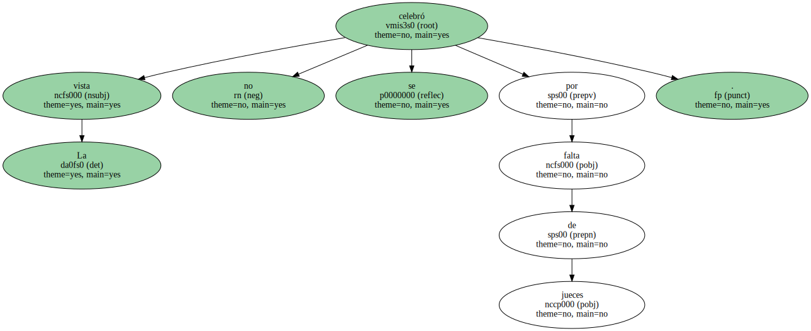
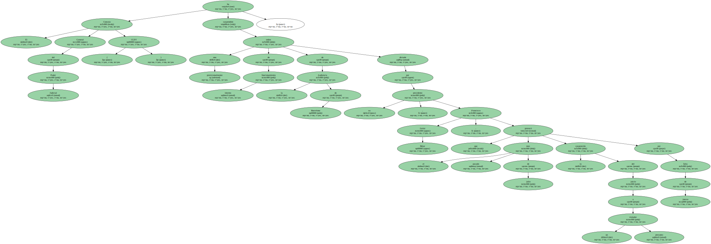
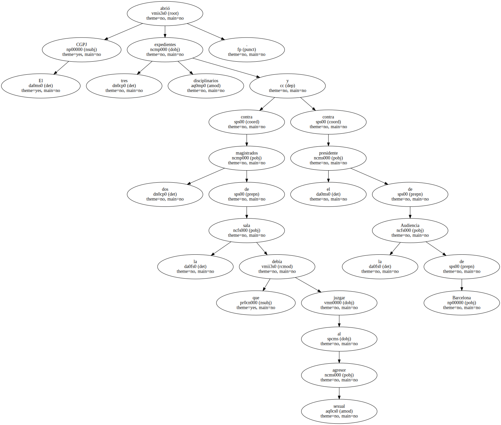
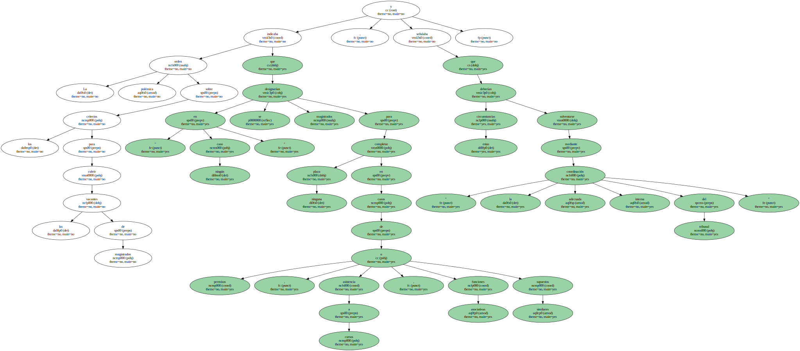
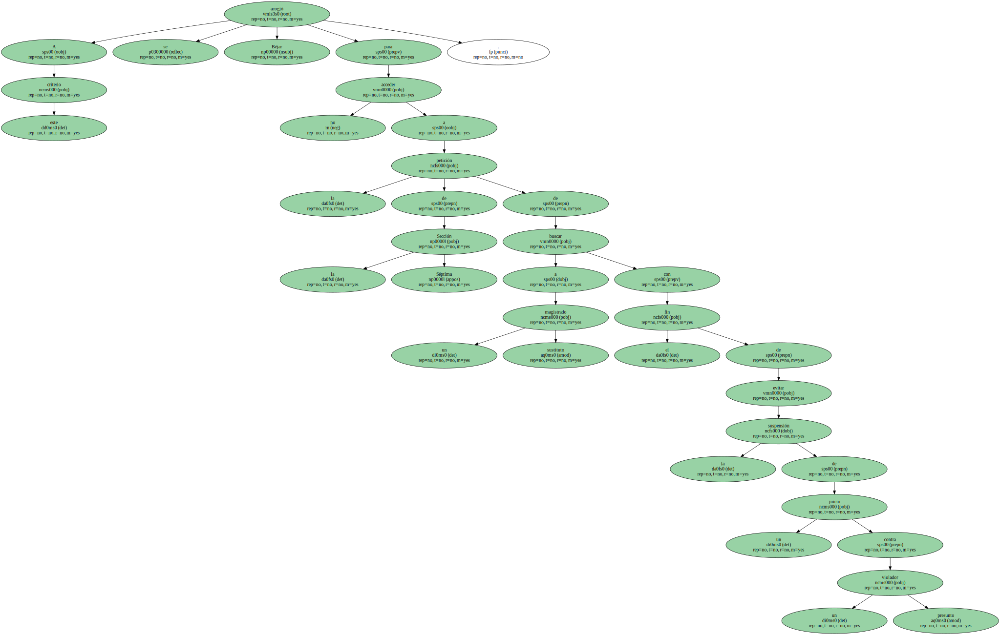

La vista no se celebró por falta de jueces.
El Consejo General del Poder Judicial ( CGPJ ) ha suspendido provisionalmente una orden de funcionamiento interno de la Audiencia de Barcelona dictada por su presidente , Francisco Javier Béjar , que el pasado mes de julio provocó la suspensión del juicio a un presunto violador por falta de jueces.
El CGPJ abrió tres expedientes disciplinarios contra dos magistrados de la sala que debía juzgar al agresor sexual y contra el presidente de la Audiencia de Barcelona.
La decisión del CGPJ responde al recurso presentado por el anterior presidente de la Audiencia de Barcelona , Gerard Thomas , contra la orden de Béjar , al considerar que provocaba la suspensión de juicios.

La polémica orden sobre los criterios para cubrir las vacantes de magistrados indicaba que " en ningún caso " se designarían magistrados para completar ninguna plaza en casos de permisos , asistencia a cursos , funciones asociativas o supuestos similares , y señalaba que estas circunstancias deberían solventarse mediante " la adecuada coordinación interna del tribunal ".
A este criterio se acogió Béjar para no acceder a la petición de la Sección Séptima de buscar a un magistrado sustituto con el fin de evitar la suspensión de un juicio contra un presunto violador.
